We present a new technique for constructing multigrid preconditioners arising in the semi-smooth Newton solution process of optimization problems of the form
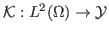
is a bounded linear operator, with the embedding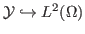
being compact, and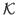
being the solution operator of a PDE (for example,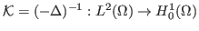
).For a piecewise constant discretization of the control space
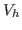
, each semi-smooth Newton (outer) iteration requires the solution of a linear system whose matrix is a principal submatrix of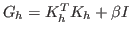
, where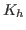
is the matrix representing the discretization of , and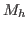
for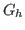
that satisfies, under reasonable conditions,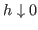
. While this result is interesting from a theoretical point of view (and qualitatively consistent with the behavior of the preconditioner for the full system), its practicality is limited by the suboptimal factor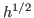
in (2).The new technique, relying on constructing larger coarse spaces than before, produces multigrid preconditioners that are able to capture the character of the operator in an optimal way, namely we have